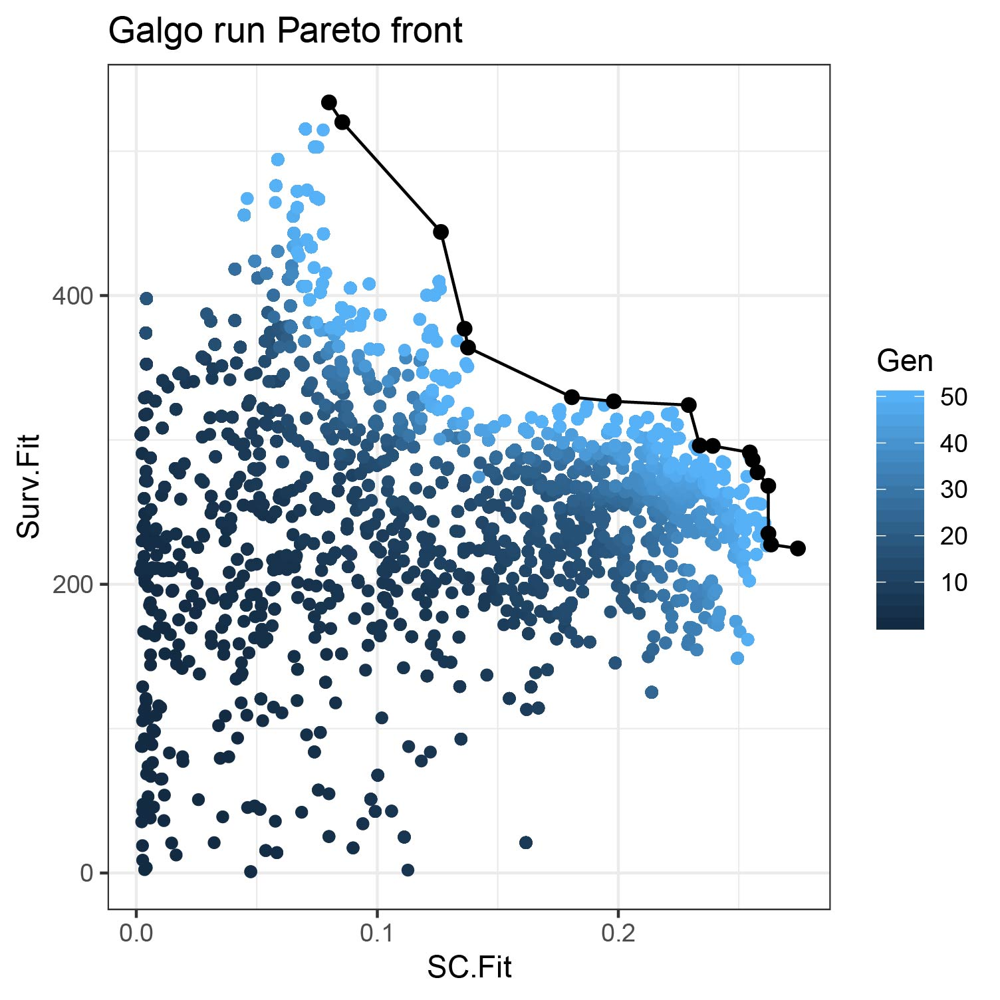
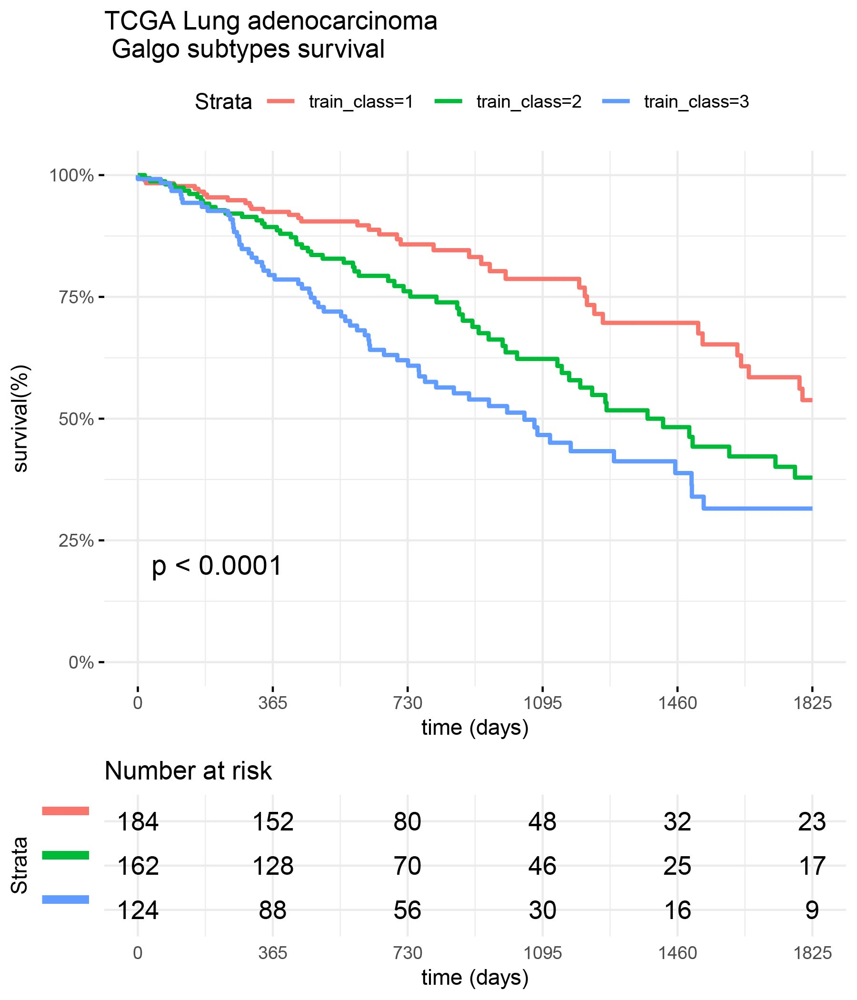

A multi-objective optimization algorithm for disease subtype discovery based on a non-dominated sorting genetic algorithm. The galgo framework combines the advantages of clustering algorithms for grouping heterogeneous omics data and the searching properties of genetic algorithms for feature selection and optimal number of clusters determination to find features that maximize the survival difference between subtypes while keeping cluster consistency high.
Package Overview
The galgoR package implements the Galgo algorithm as well as several helper functions for analyzing the results. The package also includes some example data sets useful for getting familiar with the package.
In order to standardize the structure of genomic data, the package uses the ExpressionSet structure from the Biobase package. The ExpressionSet objects can hold different types of data in a single structure, but in this case, we opted for using a simplified format to facilitate the example to those not familiar with the Biobase package. The ExpressionSet objects are formed mainly by a matrix of genetic expression, usually derived from microarray or RNAseq experiments and the Phenotypic data containing information on the samples (condition, status, treatment, survival, and other covariates). Additionally, some annotations and feature Meta-data can also be included in the objects.
For testing galgoR, the package contains two reduced lung adenocarcinoma gene expression datasets ([TCGA] and [GSE68465]), that can be downloaded using the function use_rna_luad(). Additionally, galgoR provides the Wilkerson’s centroids to perform lung adenocarcinoma sample classification.
Installation
You can install the released version of galgoR using devtools with:
devtools::install_github("https://github.com/harpomaxx/galgo")
library(galgoR)Executing Galgo
The main function in the package is galgo(). The function accepts an expression matrix in the previous detailed section and a survival object survival package) to find robust gene expression signatures related to a given outcome. Besides, galgo() accepts several other parameters such as the number of solutions in the population, the number of generations the algorithm must evolve, and the distance function used for the clustering algorithm, among others. The parameters facilitate the setup according to the characteristics of the analysis to be performed. All the Galgo evolutionary process is executed using a multicore architecture. Alternatively, to speed up the process, it is possible to execute Galgo on Graphics processor units (GPU). An example of a typical galgoR workflow is shown below:
rna_luad<-use_rna_luad()
prm <- rna_luad$TCGA$expression_matrix
clinical <-rna_luad$TCGA$pheno_data
OS <- survival::Surv(time=clinical$time,event=clinical$status)
output<-galgoR::galgo(generations = 5, population = 30,prob_matrix = prm, OS=OS, ,verbose = 2,usegpu = T)An example of the results obtained by Galgo in the TCGA dataset is shown below. The first plot shows the Pareto front obtained by Galgo in terms of the Survival (Surv.Fit) and the cohesiveness (SC.Fit) fitness functions. On the second plots shows the different survival subtypes found by the algorithm.

GPU support
Galgo is able to fasten its execution using GPU computing utilizing the gpuR package . Before installing gpuR, the opencl backend should be configured.
In linux systems install latest nvidia cuda drivers and the opencl backend.
apt-get install nvidia-418 nvidia-opencl-icd-418 libcuda1-418
apt-get install opencl-headers ocl-icd-opencl-dev
For installing gpuR and enable GPU computing in different operating systems, follow gpuR installation guide.